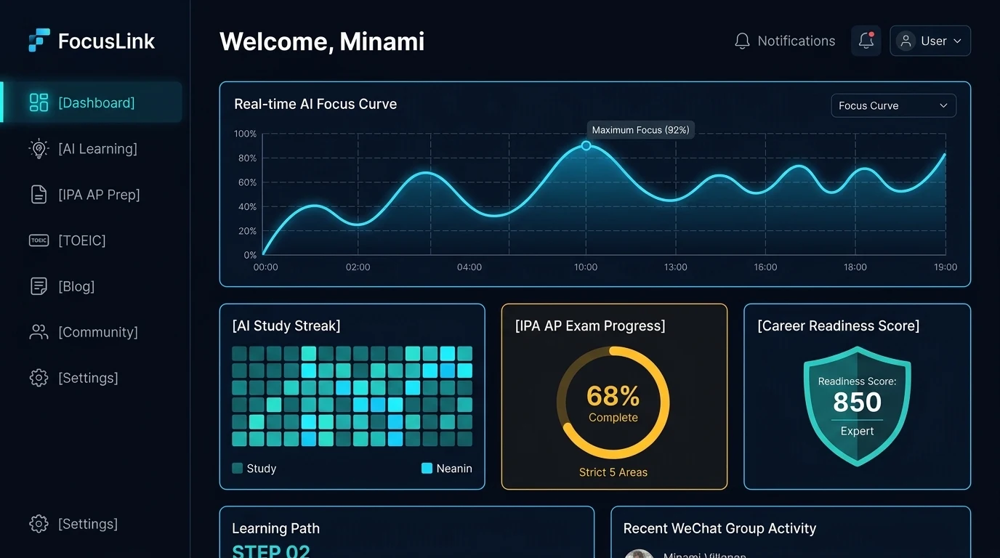

孤独な学びを、
共に成長する力へ。
在日外国人・IT人材の資格突破（IPA・TOEIC・JLPT）、AIによる学習プロセスの可視化、そして日本企業での就職・永住権早期化を一貫支援する学習ポータル。

// 01. BREAKING THE 4 BARRIERS
当事者視点の課題解決迷わず選べる入口
分散しがちな試験対策・ビザ加点情報・体験記を一箇所に体系化。
「解ける前提」をつくる
専門用語や長文読解の壁を噛み砕き、馴染みある具体例から論理理解。
習慣と記録の見える化
エッジAI集中解析とタイムラプス記録で、日々の努力を挫折させない。
伴走とキャリア接続
相互監督コミュニティと学習ログ証明で、日本企業への就職・定着へ直結。
// 02. LEARNING & EXAM MODULES
目的別・速攻学習ポータル
南式応用情報速攻！（科目B）
全12分野から文系・実務未経験でも得点源にしやすい厳選5分野に特化。 単なる解答解説ではなく、「抽出 → 理解 → 通訳 → 整理 → 応用 → 記述」の6ステップで過去問の論理的分析ノートとYouTube解説をワンクリック往復。
情報処理安全確保支援士 (SC)
高度区分セキュリティスペシャリスト対策ノート・午後問題パターン分析。
TOEIC 速攻トレーニング
頻出語彙・文法パターン・体系化マップによるスコアアップ集中演習。
Minami Tech & Study Blog
日本でのITキャリア、36資格の合格体験記、学習メソッドを発信する公式ブログ。
JLPT N1/N2 ＆ 実務ビジネス日本語
試験合格だけでなく、日本企業が重視する「敬語・報連相・電話対応・社内報告書」まで実践カバー。
エッジAI集中解析 ＆ 学習ログ証明
スマホ1台で集中度を曲線可視化。タイムラプス共有で仲間と相互監督し、努力を「改ざん不能な実績」へ。
資格取得 × 高度専門職ポイント簡易試算
当てはまる項目をクリックして、永住許可申請の短縮要件（通常10年 → 3年 / 最速1年）を確認できます。
※ 出入国在留管理庁「高度人材ポイント制」の制度基準に基づく簡易試算です。実務経験・年収・イノベーション加点等により変動します。
FocusLink が目指す「育成〜定着」3ステップ
基礎力と資格・語学の獲得
過去問演習・YouTube解説・勉強会で「わかる・解ける」を積み上げ、客観的な資格を取得。
AI習慣化と学習ログの蓄積
エッジAI集中解析とタイムラプス共有で、継続力と主体性を企業へ提示できるポートフォリオへ。
実務インターンとキャリア形成
学習履歴に基づく実践機会の推薦とフィードバック評価で、日本社会での長期的な活躍へ。
About Minami / 運営者メッセージ
盧 易南（Minami）｜立教大学大学院ビジネスデザイン研究科・NTTグループ出身
2017年の来日後、進学・就職・3年間で36個の資格独学挑戦を続ける中で感じたのは、「努力しているのに孤立し、成果や過程が伝わりにくい」という課題でした。「理解できる土台」と「一緒に進める仲間・仕組み」を整え、一人ひとりの努力が確かなキャリアにつながる場をつくります。
WeChat 学習交流グループ
定期開催の無料対策勉強会・過去問質問・日本就職キャリア相談はこちら。
nowminami
外国人材の「継続力・実務適性」をデータで見極めませんか？
履歴書だけでは見えない数百時間の学習ログと資格実績をもとに、ミスマッチの少ない高度外国人材の採用・定着を支援します。